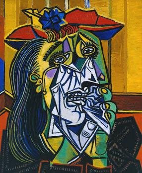

Weeping Woman
Pablo Picasso · 1937 · Oil paint on canvas · 60.8 × 50 cm · Tate, London
In copyright. Look and learn: shown for study, not for download.
The stretcher is inscribed 26 October 37, the year Picasso painted Guernica, and the figure comes from that mural's woman holding her dead child. The photographer Dora Maar, who photographed Guernica being made, was the model. Within two weeks Roland Penrose had bought it from Picasso, and in 1938 it toured Britain with Guernica and its studies. Penrose gave it to Antony Penrose in 1963, and it came to the Tate in 1987 in lieu of tax.